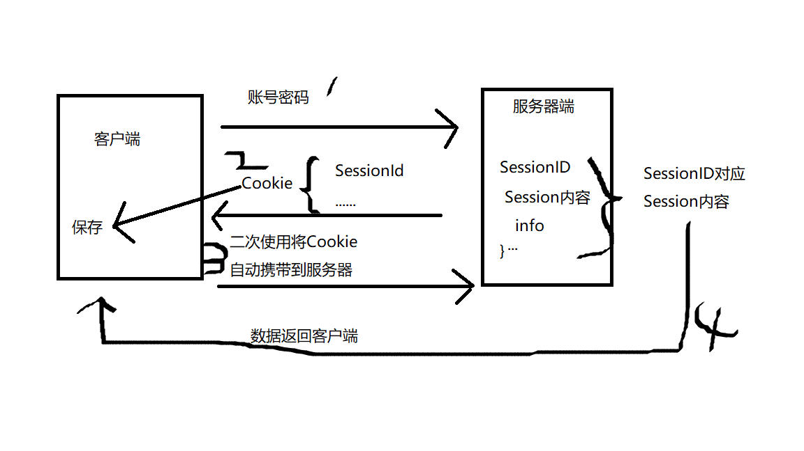

零碎知识点补充
开启音乐享受一波有点长的大杂烩
网络相关
Http和Https
http
- HTTP协议传输的数据都是未加密的，也就是明文的，因此使用HTTP协议传输隐私信息非常不安全
- HTTPS就是HTTP加上加密处理（一般是SSL安全通信线路）+认证+完整性保护
https
① 客户端发起一个https的请求，把自身支持的一系列Cipher Suite（密钥算法套件，简称Cipher）发送给服务端
② 服务端，接收到客户端所有的Cipher后与自身支持的对比，如果不支持则连接断开，反之则会从中选出一种加密算法和HASH算法以证书的形式返回给客户端 证书中还包含了 公钥 颁证机构 网址 失效日期等等
③ 客户端收到服务端响应后会做以下几件事
验证证书的合法性
颁发证书的机构是否合法与是否过期，证书中包含的网站地址是否与正在访问的地址一致,等证书验证通过后，在浏览器的地址栏会加上一把小锁生成随机密码。如果证书验证通过，或者用户接受了不授信的证书，此时浏览器会生成一串随机数，然后用证书中的公钥加密HASH握手信息
用最开始约定好的HASH方式，把握手消息取HASH值， 然后用 随机数加密 “握手消息+握手消息HASH值(签名)” 并一起发送给服务端之所以要取握手消息的HASH值，主要是把握手消息做一个签名，用于验证握手消息在传输过程中没有被篡改过
④ 服务端拿到客户端传来的密文，用自己的私钥来解密握手消息取出随机数密码，再用随机数密码 解密 握手消息与HASH值，并与传过来的HASH值做对比确认是否一致。然后用随机密码加密一段握手消息(握手消息+握手消息的HASH值 )给客户端
⑤ 客户端用随机数解密并计算握手消息的HASH，如果与服务端发来的HASH一致，此时握手过程结束，之后所有的通信数据将由之前浏览器生成的随机密码并利用对称加密算法进行加密 .
因为这串密钥只有客户端和服务端知道，所以即使中间请求被拦截也是没法解密数据的，以此保证了通信的安全加密方式
- 非对称加密算法：RSA，DSA/DSS 在客户端与服务端相互验证的过程中用的是对称加密
- 对称加密算法：AES，RC4，3DES 客户端与服务端相互验证通过后，以随机数作为密钥时，就是对称加密
- HASH算法：MD5，SHA1，SHA256 在确认握手消息没有被篡改时
优势
- 数据完整性：内容传输经过完整性校验
- 数据隐私性：内容经过对称加密，每个连接生成一个唯一的加密密钥
- 身份认证：第三方无法伪造服务端（客户端）身份
摘录
TCP和UDP
UDP是一个无状态的传输协议。会出现丢包、消息顺序偶尔错乱，所以传输较快。适用于对于即时传输使用,适用于视频之类等不需要确保数据完整性的情况。相对应的,那么占有的资源消耗就会更少
TCP的确认机制、三次握手协议,确保了数据的传输顺序以及数据的完整性，所以流程相对繁琐，导致占用资源高。但是反而是因为这些措施，TCP容易被人利用，实现DOS、DDOS、CC等攻击
区别
- TCP面向连接（先确认再连接）;UDP是无连接的，即发送数据之前不需要建立连接
- TCP更可靠
- TCP面向字节流实际上是TCP把数据看成一连串无结构的字节流;UDP是面向报文的，UDP没有拥塞控制，因此网络出现拥塞不会使源主机的发送速率降低（对实时应用很有用，如IP电话，实时视频会议等）
- 每一条TCP连接只能是点到点的;UDP支持一对一，一对多，多对一和多对多的交互通信
- TCP首部开销20字节;UDP的首部开销小，只有8个字节
- TCP的逻辑通信信道是全双工的可靠信道，UDP则是不可靠信道
摘录
Http报文结构
请求报文
- 请求行：包含请求方法、URI、HTTP版本信息
- 请求首部字段
- 请求内容实体
响应报文
- 状态行：包含HTTP版本、状态码、状态码的原因短语
- 响应首部字段
- 响应内容实体
常用的HTTP方法
HTTP响应状态码
详情
Socket协议实现
- 网络上的两个程序通过一个双向的通信连接实现数据的交换，这个连接的一端称为一个socket
- 建立网络通信连接至少要一对端口号（socket）。socket本质是编程接口（API），对TCP/IP的封装，TCP/IP也要提供可供程序员做网络开发所用的接口，这就是Socket编程接口；HTTP是轿车，提供了封装或者显示数据的具体形式；Socket是发动机，提供了网络通信的能力
- TCP/UDP在WIFI状态下基于Socket通讯
Cookie
- Cookie(响应内容)是客户端保存用户信息的一种机制，用来记录用户的一些信息
- 也是实现Session的一种方式
- Cookie存储的数据量有限，且都是保存在客户端浏览器中。不同的浏览器有不同的存储大小，但一般不超过4KB。因此使用Cookie实际上只能存储一小段的文本信息
Session
- 客户端访问服务端的时候，服务器端把客户端信息以某种形式记录在服务器上，这个就是Session
- 二次访问，只要从该Session中查去对应的信息即可
- 流程

Token
- 有了session之后，客户端有了cookie保存，服务端有了session信息。根据对应的SessionID为key，每次请求就带着它。频繁的对比和存储影响性能，所以就有了Token
- 服务器不需要存储用户的登录信息
- 流程
Java
interface abstract
- 接口比抽象的概念更先进一步,产生一个完全抽象的类，没有提供任何具体实现。只提供了方法体，只提供了形式，没有任何具体实现。
- 用来创建类和类之间的协议
- 不仅极度抽象，而且与允许通过创建一个能被向上转型为多种基类的类型，来实现多种某种类似多重继变种的特性。即 instanceof
多线程
sleep()和wait()的区别
- sleep()方法是Thread类，而wait()方法是Object类
- sleep是暂停执行指定时间，虽然将CPU让出。但是处于监控状态下线程不会释放对象锁，到指定时间后恢复原状态。然而wait方法则是放弃对象锁，进入等待池中，一直到此对象调用notify()方法唤醒后，本线程才进入对象锁定池准备
线程池
- Java有哪些线程池？他们的区别是什么？线程池工作流程是怎样的？线程池实现原理是怎样的？Cache线程池有哪些弊端？
多线程通信
Handler
runOnUiThread
View.post(Runnable)
AsyncTask
- synchronize关键字怎么用的？还知道哪些同步的方式？
- Thread直接调用run方法会怎么样？start方法作用是什么？
- volatile关键字的作用是什么？
- 怎么安全停止一个线程任务？原理是什么？线程池里有类似机制吗？
数据结构
- HashMap和HashTable的区别？和 ConcurrentHashMap 区别？和LinkedHashMap区别？内部实现原理？
- LRUCache的原理？
- ArrayList和LinkedList区别？为什么ArrayList不是线程安全的？
- 数据库的索引用的什么数据结构？
虚拟机
- 垃圾回收机制？有哪些对象可以作为GC roots？
- 跟Art、Dalvik对比
- Java内存模型？
- 类加载机制？双亲委托模型？
Android题
- 做过哪些性能优化？是怎么评测和具体优化的？
- Activity的冷启动流程？AMS的作用？
- 怎么分析内存泄漏？
- View的事件分发机制？滑动冲突怎么解决？
- 自定义View的原理和流程？
- Handler原理？（一般会花式扩展）
- 有哪些多进程通信方式？Binder机制？
- Android的生命周期和启动模式相关？
- 你项目中用到哪些开源库？说说其实现原理？（OKhttp、RxJava、Retroit重点，如果有用到的话）
- Android的打包流程？apk里有哪些东西？签名算法的原理？
- 了解哪些插件化技术？
- LinearLayout的布局流程？
- 对Mvp的理解？
- Android怎么做保活？
算法
- 排序相关的（快排，分析不同排序区别，时间复杂度等）
- 字符串、数组相关的（滑动窗口、双指针）
- 链表（反转链表）
- 递归、斐波那契数列（爬楼梯）
- 动态规划
其它
- 用过哪些设计模式？DCL单例模式为什么要两次判空？Android里源码或者你用过的开源库都用到了什么设计模式？
— final关键字的作用？ - 静态内部类和内部类的区别？
- 值传递类问题
- Kotlin为什么能和Java混编
- 本文链接：https://www.wl960127.top/posts/22837/
- 版权声明：本站内容均为个人学习笔记,不涉及商业用途，仅提供学习参考,第三方摘录已署名链接,未署名请评论添加,转载署名来源即可。
分享